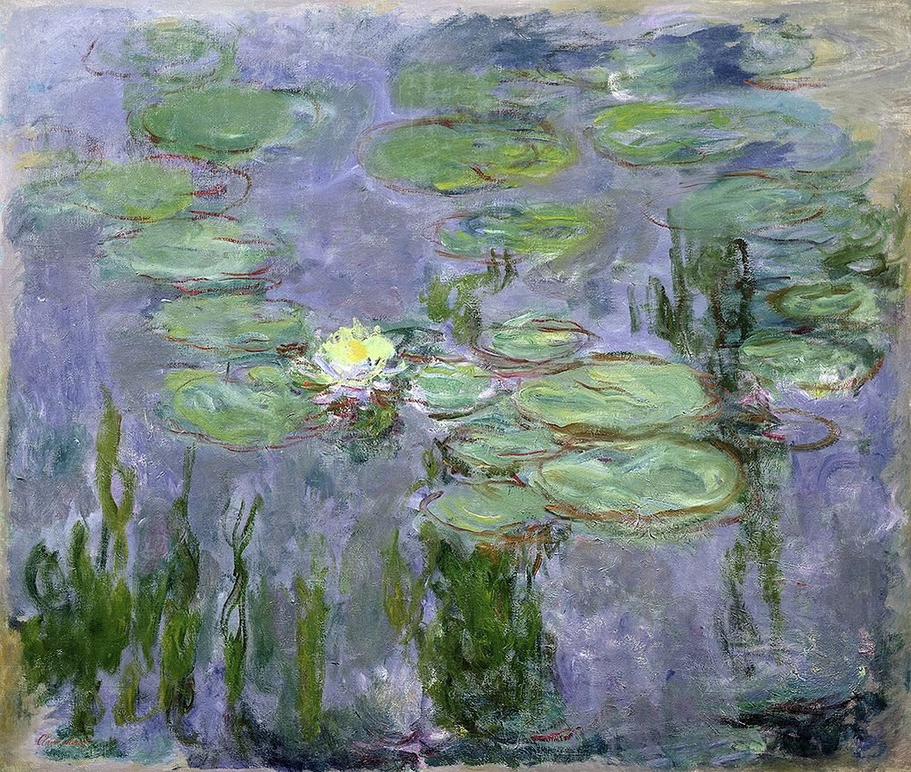

<head>
<meta charset="UTF-8" />
<meta name="keywords" content="drawing, painting" />
<meta name="description" content="drawings by Sunjy" />
<title>Sunjy</title>
<link rel="shortcut icon" type="image/x-icon" href="../../mImages/mCommon/favicon.ico" media="screen" />
<link rel="stylesheet" type="text/css" href="../../mCsses/mCommon/mCssA.css" />
<link rel="stylesheet" type="text/css" href="../../mCsses/mCommon/mCssB.css" />
<link rel="stylesheet" type="text/css" href="../../mCsses/mCommon/mCssC.css" />
<link rel="stylesheet" type="text/css" href="../../mCsses/mCommon/mCssD.css" />
<link rel="stylesheet" type="text/css" href="../../mCsses/mContent/mCssA.css" />
<link rel="stylesheet" type="text/css" href="../../mCsses/mContent/mCssB.css" />
<link rel="stylesheet" type="text/css" href="../../mCsses/mContent/mCssC.css" />
<link rel="stylesheet" type="text/css" href="../../mCsses/mContent/mCssD.css" />
</head>
<script type="text/javascript" src="../../mScripts/mContent/mContentAA.js" /></script>
<script type="text/javascript" src="../../mScripts/mContent/mContentAB.js" /></script>
<script type="text/javascript" src="../../mScripts/mContent/mContentAC.js" /></script>
<script type="text/javascript" src="../../mScripts/mContent/mContentAD.js" /></script>
<script type="text/javascript"></script> 
<script type="text/javascript">
document.write('<div class="mImgAbsolute"></div>');
/*
document.write('<p class="mFontSizeBColor" />From a white paper...</p>');
document.write('<table class="center"><tr><td>');
document.write('');
document.write('</td></tr></table>');
*/
</script>


<script type="text/javascript">
document.write('<p class="mFontSizeBColor" />Water Lilies </p>');
document.write('<p class="mFontSizeSColor" />Water Lilies by Claude Monet. The Musée Marmottan Monet has a large selection of the Water Lilies paintings from the series created by Claude Monet.<br><br>At the beginning of the 1900s, Monet created his most extensive series of paintings based on his water lily pond in his garden at Giverny, France. <br><br>Monet first rented a house and gardens in Giverny in 1883. As Monet’s fortunes improved with his increasing success, his painting sales, Monet was able to buy the house, the surrounding buildings, and the land for his gardens in 1890.<br><br>Monet’s family help to develop the gardens and Monet built a greenhouse and a second studio. As Monet’s art sales grew, his garden grew and evolved.<br><br>In 1893 Monet purchased additional land with a water meadow and began a vast landscaping project, which included lily ponds. Claude Monet was the garden architect and eventually hired seven gardeners to help him.<br> </p>');
document.write('<table class="center" /><tr><td>');
document.write('<br>At the beginning of the 1900s, Monet created his most extensive series of paintings based on his water lily pond in his garden at Giverny, France. <br><br>Monet first rented a house and gardens in Giverny in 1883. As Monet’s fortunes improved with his increasing success, his painting sales, Monet was able to buy the house, the surrounding buildings, and the land for his gardens in 1890.<br><br>Monet’s family help to develop the gardens and Monet built a greenhouse and a second studio. As Monet’s art sales grew, his garden grew and evolved.<br><br>In 1893 Monet purchased additional land with a water meadow and began a vast landscaping project, which included lily ponds. Claude Monet was the garden architect and eventually hired seven gardeners to help him.<br> " />');
document.write('</td></tr></table>');
</script>


